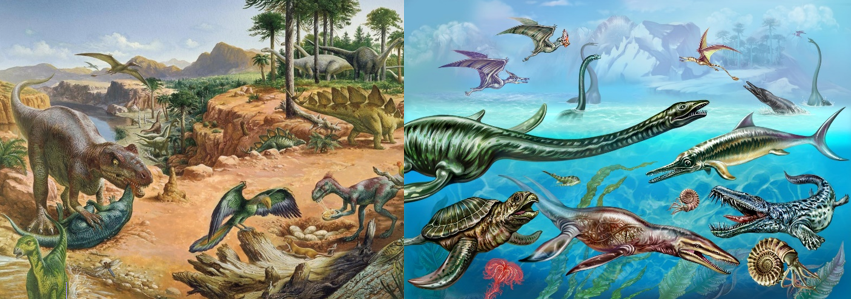
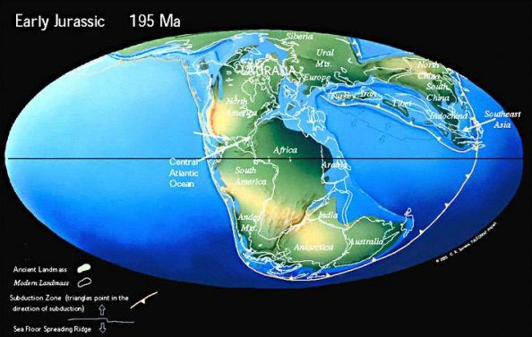

The Jurassic Period is known as the "Age of Dinosaurs" because dinosaurs were the dominant land animals during this time. The period started with a mass extinction that wiped out 80% of species which paved the way for dinosaurs to dominate.
Life Forms during this Period
Dinosaurs flourish emphasizing “Golden Age of Dinosaurs”. Notable events in relation to life forms during this period includes the first birds appearing.

Geological Features during this Period
In this period, Pangaea is still breaking apart which lead to the formation of new landmasses and the Atlantic Ocean emerging.
